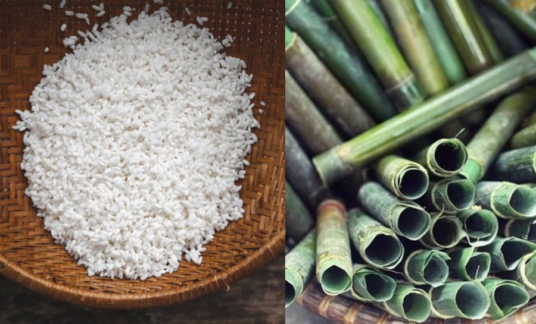
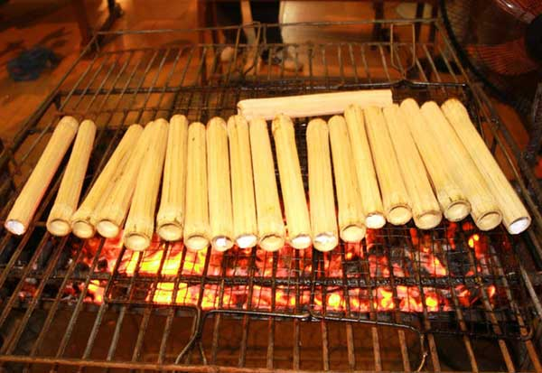
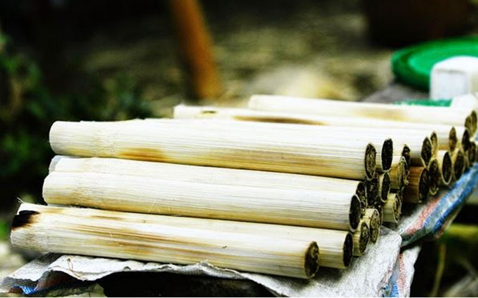

CƠM LAM TÂY BẮC
1. Tên gọi
Cơm lam là tên gọi ghép từ nguyên liệu chính và cách chế biến. Trong đó, "lam" là thuật ngữ chỉ việc nướng chín thức ăn trong ống tre hoặc ống nứa. Tên gọi này hiểu đơn giản là món cơm được nấu chín trong ống tre.
2. Nguồn gốc
.jpg)
Cơm lam nướng có nguồn gốc từ đồng bào dân tộc vùng Tây Bắc như Thái, Mường, Dao. Món ăn ra đời từ đời sống sinh hoạt trong rừng, tiện mang theo khi lao động, đi rẫy. Dần dần, cơm lam trở thành đặc sản gắn với văn hóa ẩm thực Tây Bắc.
3. Nguyên liệu

- Gạo nếp nương: Loại nếp trồng trên nương rẫy vùng cao, hạt tròn, dẻo và có mùi thơm đặc trưng, giúp cơm lam đậm vị hơn.
- Ống tre hoặc ống nứa: Chọn ống còn tươi, không quá già cũng không quá non để khi nướng không bị cháy, đồng thời tạo mùi thơm tự nhiên cho cơm.
- Nước suối hoặc nước sạch: Dùng để ngâm và đổ vào ống cùng gạo, giúp cơm chín mềm, giữ được vị thanh mát.
- Lá chuối hoặc lá dong: Dùng để bịt kín miệng ống, giữ hơi nước bên trong và tăng thêm hương thơm khi nướng.
4. Cách chế biến

5. Giá thành

Giá cơm lam dao động khoảng 10.000 – 30.000 đồng mỗi ống, tùy vào kích thước và từng địa điểm bán. Món ăn này thường được bày bán tại các chợ phiên vùng cao, khu du lịch Tây Bắc hoặc ven các cung đường du lịch. Cơm lam được nướng trong ống tre nên khi mua vẫn còn thơm mùi tre nứa, nóng hổi và dẻo mềm, rất hấp dẫn du khách.